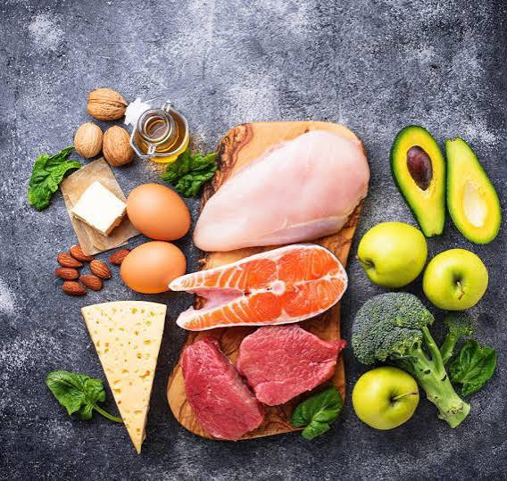
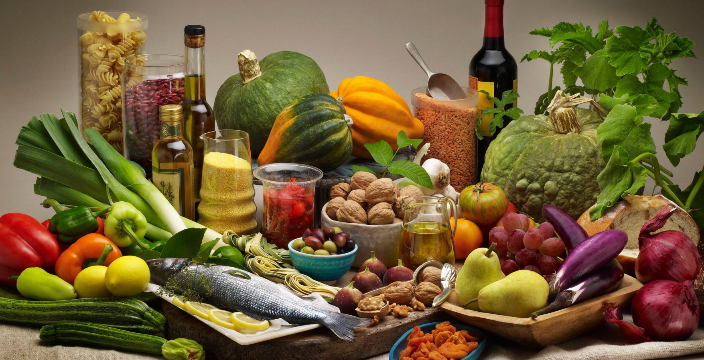
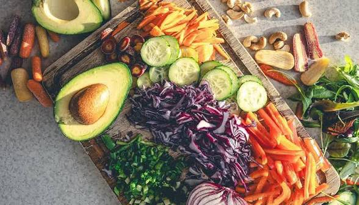
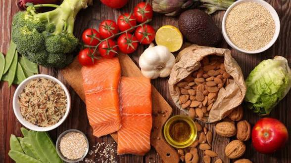
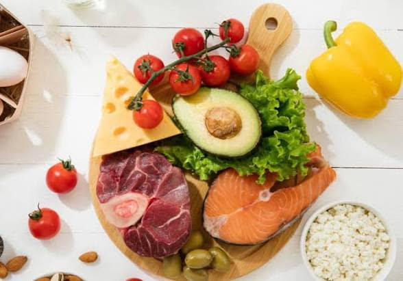

Sobre
Esse site apresenta uma coleção de dietas dependendo no seu caso.
Dietas

Dieta Low Carb
A dieta low carb é um plano alimentar que reduz a ingestão de carboidratos, como pão, massas e açúcares, e aumenta o consumo de proteínas e gorduras saudáveis. O objetivo é forçar o corpo a queimar gordura como fonte de energia, o que pode levar à perda de peso e melhorias na saúde metabólica.

Dieta Mediterrânea
A dieta mediterrânea é baseada nos hábitos alimentares tradicionais dos países do Mediterrâneo, como Grécia e Itália. Ela enfatiza o consumo de frutas, vegetais, grãos integrais, peixes, azeite de oliva e nozes, enquanto limita a ingestão de carnes vermelhas e alimentos processados. Essa dieta é conhecida por seus benefícios para a saúde cardiovascular e longevidade.

Dieta Vegana
A dieta vegana é um estilo de alimentação que exclui todos os produtos de origem animal, incluindo carne, laticínios, ovos e mel. Os veganos consomem uma variedade de alimentos à base de plantas, como frutas, vegetais, grãos, leguminosas, nozes e sementes. Essa dieta pode ser benéfica para a saúde e o meio ambiente, mas requer planejamento cuidadoso para garantir a ingestão adequada de nutrientes essenciais.

Dieta Cetogênica
A dieta cetogênica é um plano alimentar que reduz a ingestão de carboidratos e aumenta o consumo de gorduras saudáveis. O objetivo é forçar o corpo a queimar gordura como fonte de energia, o que pode levar à perda de peso e melhorias na saúde metabólica.

Dieta de Bulking
A dieta de bulking é um plano alimentar que visa aumentar a massa muscular através do consumo de calorias em excesso. Ela envolve o aumento da ingestão de proteínas, carboidratos e gorduras saudáveis para fornecer energia e nutrientes necessários para o crescimento muscular.